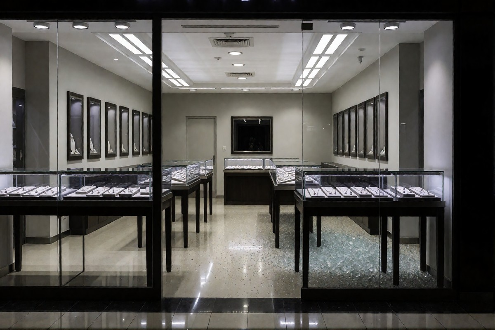

Sicilia · 24 novembre 2026
Catania, assalto con la mazza alla gioielleria di Porte di Catania

Tre uomini incappucciati hanno sfondato le vetrine di un'oreficeria dentro il centro commerciale, all'ora di punta. Uno è stato bloccato da due carabinieri che quella sera non erano in servizio: gli altri due sono in fuga.
di Franco Zanghì
Tre uomini col volto coperto da un cappuccio, una mazza di ferro e le vetrine di un'oreficeria sfondate in mezzo ai clienti. È accaduto la sera di martedì 24 novembre 2026 nella galleria del centro commerciale Porte di Catania, nel quartiere Pigno, alla periferia della città.
Il negozio si trova accanto all'ipermercato, vicino all'accesso al parcheggio interrato. Sull'ora i resoconti non coincidono: MeridioNews indica le 19:20, Diretta Sicilia ed Etna News 24 le 19:30 circa, altre testate parlano genericamente di «intorno alle 19». In ogni caso era l'ora in cui il centro commerciale è pieno di gente.
I colpi di mazza e la fuga dei clienti
La banda ha colpito vetrine e teche con una mazza di ferro — descritta da SiciliaWeb come un attrezzo artigianale di circa 15 chili, da NoveTV come un martello rudimentale dello stesso peso — e ha riempito un sacco di gioielli e preziosi.
L'allarme è scattato subito e fra i clienti c'è stato il panico, con diverse persone che sono corse verso le uscite. Una dipendente del centro commerciale ha raccontato ad Antenna Sicilia di aver sentito il fragore, di essere scappata piangendo e di essersi nascosta nel parcheggio interrato, dove uno dei rapinatori le è passato davanti. Nessuna fonte riferisce di feriti.
Due carabinieri fuori servizio
Uno dei tre non è riuscito ad allontanarsi. Lo hanno bloccato due carabinieri del Comando provinciale di Catania che in quel momento non erano in servizio e si trovavano nel supermercato accanto: uno lo ha placcato da dietro, il collega lo ha aiutato a tenerlo a terra. Il Quotidiano di Sicilia li indica come militari della stazione di Librino.
«Ci siamo trovati al posto giusto nel momento giusto», hanno detto i due, intervistati da SiciliaWeb e dalla Sicilia. E hanno aggiunto un'osservazione sui presenti: «Una scena da film: tutti facevano video, nessuno ci ha aiutato dopo averli bloccati».
Sul posto sono arrivate anche le Volanti della Questura. La refurtiva è stata recuperata: il sacco con i preziosi è stato ritrovato a terra. Gli altri due complici sono riusciti a dileguarsi e le ricerche proseguono, con l'esame delle immagini della videosorveglianza.
Quello che non si sa ancora
Dell'uomo fermato non sono stati resi noti né il nome né l'età. SiciliaWeb e NoveTV scrivono che si trova ai domiciliari in attesa dell'udienza di convalida e indicano in circa 80 mila euro il valore degli oggetti portati via: sono le uniche due testate a riferirlo e nessuna agenzia lo conferma. Per lui vale la presunzione d'innocenza fino alla sentenza definitiva.
Il nome della gioielleria non è stato pubblicato da nessuna delle testate che hanno seguito il fatto, e il responsabile del negozio non ha voluto commentare. Mercoledì il negozio è rimasto chiuso.
Fonti
- ANSA, «Assaltano gioielleria in un centro commerciale a Catania, clienti in fuga», 24 novembre 2026
- MeridioNews, «Assalto alla gioielleria di Porte di Catania», 24 novembre 2026
- SiciliaWeb, «Una scena da film: tutti facevano video, nessuno ci ha aiutato», 25 novembre 2026
- NoveTV, «Malviventi in azione in una oreficeria del centro commerciale Le Porte», 25 novembre 2026
- Quotidiano di Sicilia, «Rapina in gioielleria a Porte di Catania», 25 novembre 2026
- Diretta Sicilia, «Banditi incappucciati assaltano la gioielleria», 25 novembre 2026
L'ora dei fatti non è univoca: fra le 19:20 e le 19:30 secondo le diverse testate. Il valore della refurtiva, circa 80 mila euro, e la misura dei domiciliari in attesa di convalida sono riferiti soltanto da SiciliaWeb e NoveTV e non risultano confermati dalle agenzie. L'esito dell'udienza di convalida, alla chiusura di questa pagina, non era noto.